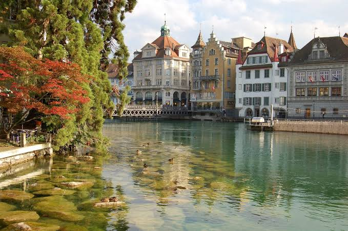
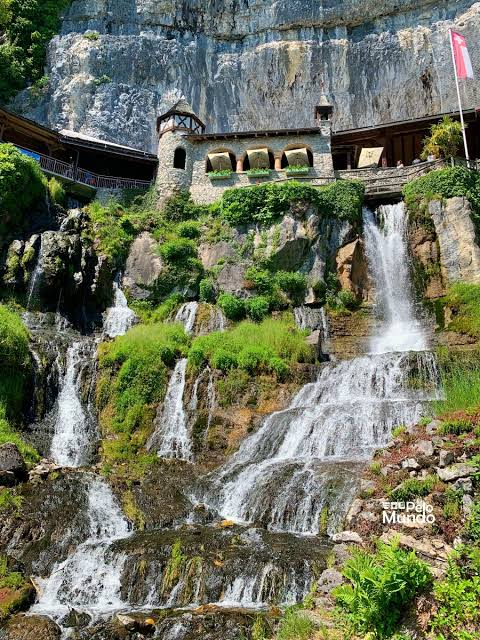
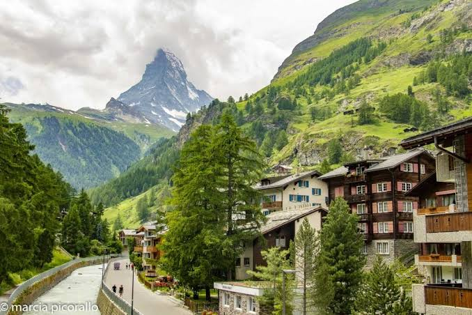
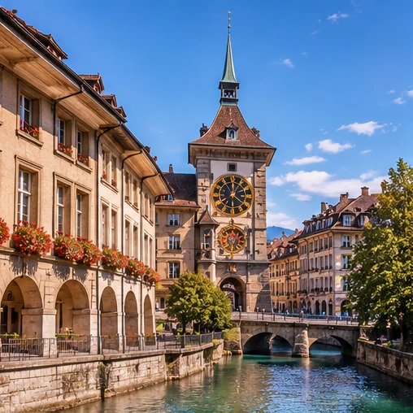
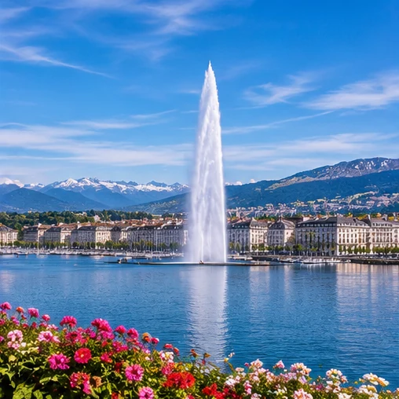
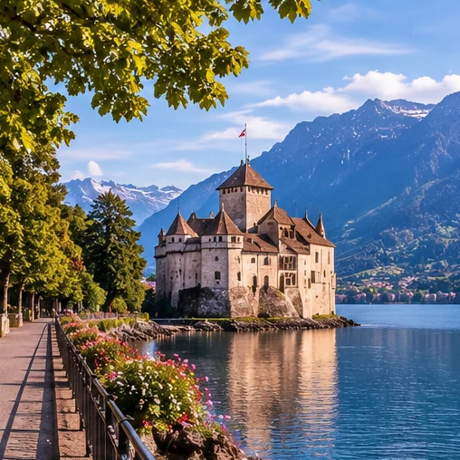
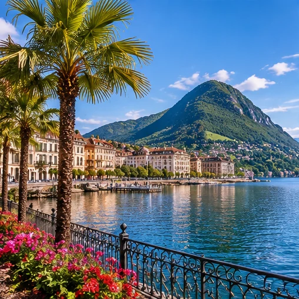
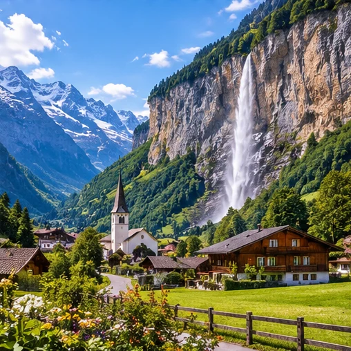
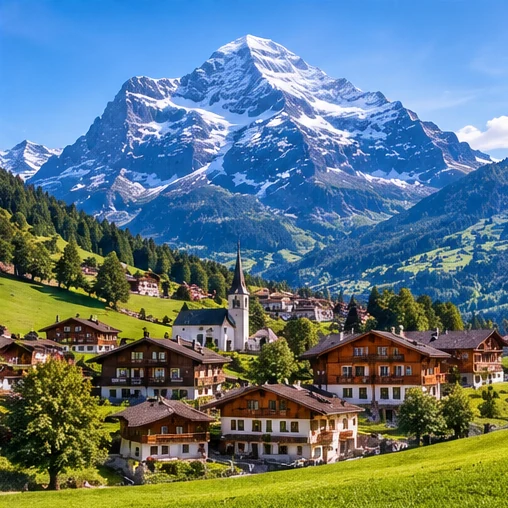

Cultura e históriaLucerna
Região centralUma cidade charmosa às margens do Lago dos Quatro Cantões, famosa por suas pontes e construções históricas.
Montanhas impressionantes, cidades encantadoras e experiências que ficam na memória. Sua próxima aventura começa aqui.
De centros históricos a vilarejos alpinos: explore diferentes regiões da Suíça e escolha o cenário que combina com sua viagem.
Mostrando 9 destinos

Cultura e históriaUma cidade charmosa às margens do Lago dos Quatro Cantões, famosa por suas pontes e construções históricas.

Natureza e aventuraUma base perfeita para explorar os lagos Thun e Brienz, trilhas e paisagens dos Alpes Berneses.

Montanhas e neveVila alpina conhecida pela vista do Matterhorn, por suas trilhas e pelas atividades de inverno.

Patrimônio e arquiteturaRuas medievais, arcadas, fontes históricas e a paisagem do rio Aare em uma cidade reconhecida pela UNESCO.

Cultura internacionalÀ beira do Lago Léman, combina centro histórico, parques, museus e o famoso jato d’água Jet d’Eau.

Lago e culturaUma elegante cidade às margens do lago, com passeio à beira d’água e o histórico Château de Chillon por perto.

Clima mediterrâneoUma região de influência italiana, com palmeiras, praças, passeios pelo lago e montanhas ao redor.

Vales e cachoeirasUm vale alpino cercado por paredões rochosos, vilarejos e cachoeiras como a Staubbach.

Aventura alpinaUm vilarejo alpino aos pés do Eiger, ponto de partida para trilhas, teleféricos e vistas panorâmicas.
Nenhum destino encontrado. Tente outro nome ou escolha uma categoria diferente.
Explore os cartões para ver mais detalhes, destaques e dicas de cada lugar.
Montanhas, lagos e vilarejos.
História em cada detalhe.
Alemão, francês, italiano e romanche.
Trens, ônibus e barcos.
A Suíça tem opções para quem gosta de aventura, cultura, gastronomia ou momentos tranquilos junto à natureza.
Explore caminhos alpinos, mirantes e teleféricos em regiões como Jungfrau e Zermatt.
Descubra paisagens de trem em rotas famosas como Bernina Express e Glacier Express.
Experimente fondue, raclette, rösti e chocolates, além de especialidades de cada região.
Caminhe por centros medievais, visite museus e conheça a diversidade cultural do país.
Uma proposta de viagem que combina cidades, lagos e paisagens alpinas. Adapte a ordem e o tempo em cada parada conforme seu ritmo.
Comece pelo centro histórico, caminhe às margens do rio Limmat e conheça a região do lago.
Visite a Ponte da Capela, explore as ruas antigas e reserve um tempo para apreciar o lago.
Conheça a cidade entre os lagos Thun e Brienz e aproveite a paisagem dos Alpes Berneses.
Explore o vale, observe as cachoeiras e conheça os pequenos vilarejos da região de Jungfrau.
Reserve o dia para mirantes, trilhas e experiências nas montanhas, conforme a estação.
Conheça a vila alpina e procure os melhores pontos para admirar o Matterhorn.
Organize o deslocamento até a cidade de partida ou estenda a viagem para conhecer Genebra e Montreux.
Cada época transforma a paisagem e muda o tipo de experiência que você pode priorizar.
Flores, parques e cidades ganhando cores depois do inverno.
Boa época para trilhas, lagos, passeios de barco e atividades ao ar livre.
Vilas e vinhedos com tons dourados, além de temperaturas mais amenas.
Neve, esportes de inverno, mercados sazonais e cenários alpinos.
O clima pode variar bastante entre cidades, vales e áreas de montanha. Confira a previsão local e as condições das trilhas e dos teleféricos antes de sair.
Algumas informações práticas ajudam a organizar o orçamento, os deslocamentos e as escolhas do roteiro.
A moeda oficial é o franco suíço (CHF). Confira a cotação e as tarifas antes de trocar dinheiro ou usar o cartão.
A Suíça tem quatro idiomas nacionais: alemão, francês, italiano e romanche. O idioma predominante muda conforme a região.
Trens, ônibus e barcos conectam muitas cidades e destinos. Compare bilhetes individuais e passes conforme seu roteiro.
Compare localização, acesso ao transporte e política de cancelamento. Em épocas concorridas, reservar cedo pode ajudar.
Use os sites oficiais para verificar atrações, horários, bilhetes, condições e novidades antes da viagem.
Os custos de alimentação, hospedagem e atrações variam conforme a cidade, a temporada e o estilo de viagem. Consulte os valores atuais diretamente com os estabelecimentos e fornecedores; este site não apresenta cotações em tempo real.
A Suíça reúne cidades históricas, lagos, vales, montanhas e diferentes tradições culturais. Em uma mesma viagem, é possível conhecer regiões de língua alemã, francesa e italiana, cada uma com características próprias.
O Explore Switzerland é um guia introdutório criado para reunir inspirações, destinos e dicas práticas para quem deseja começar a planejar uma viagem pelo país.
A moeda é o franco suíço (CHF). Em áreas turísticas, alguns estabelecimentos podem aceitar euros, mas o troco pode ser dado em francos suíços; confirme as condições antes de pagar.
Não necessariamente. Compare o custo dos trajetos individuais com passes como o Swiss Travel Pass. A melhor opção depende das cidades visitadas, da quantidade de deslocamentos e das excursões planejadas.
Sim. A rede de transporte público conecta diversas cidades e áreas turísticas. Consulte os horários e as conexões no site oficial da SBB antes de definir os deslocamentos.
Depende do que você deseja fazer. O verão costuma favorecer passeios ao ar livre e o inverno é procurado por quem quer neve e esportes de inverno; primavera e outono também oferecem experiências diferentes.
Tem dúvidas ou sugestões sobre o projeto? Envie uma mensagem.